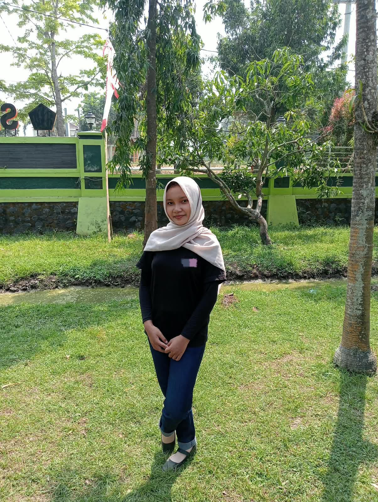

01
HTML
Menyusun struktur halaman web dengan urutan yang jelas, rapi, dan mudah dibaca.
Fondasi utama dalam membangun website
PORTOFOLIO SISWA
Hello, I'm
Saya adalah siswa Rekayasa Perangkat Lunak yang sedang belajar membangun website yang rapi, fungsional, dan mudah dipahami. Saya tertarik pada desain antarmuka, pengalaman pengguna, serta proses belajar yang terus berkembang dari project ke project.

YANG SAYA PELAJARI
Saya terus melatih kemampuan dasar dan mencoba membuat project sederhana yang menunjukkan proses belajar saya.
Menyusun struktur halaman web dengan urutan yang jelas, rapi, dan mudah dibaca.
Mengatur tata letak, warna, spacing, dan tampilan agar website lebih nyaman dilihat.
Menambahkan interaksi dasar agar halaman terasa lebih hidup dan responsif.
PILIHAN KARYA
Project-project ini adalah hasil latihan saya untuk memperkuat pemahaman dasar web development.
Membuat halaman informasi sekolah dengan layout yang sederhana, rapi, dan mudah dibaca.
Lihat detailProject ini berfokus pada penyusunan layout informasi sekolah agar lebih terstruktur dan mudah dibaca, serta belajar membagi section dengan rapi.
Merancang aplikasi kecil untuk membantu mencatat aktivitas sehari-hari dengan tampilan yang jelas.
Lihat detailProject ini mengajarkan cara menyusun antarmuka untuk kebutuhan harian dan memperhatikan pengalaman pengguna saat melihat tugas-tugas.
Menjelajahi desain komponen informasi dengan tampilan yang ringkas dan modern.
Lihat detailProject ini memperkenalkan saya pada desain komponen informasi yang ringkas dan mudah dibaca tanpa membuat pengguna kewalahan.
TERHUBUNG
Saya terbuka untuk diskusi, kolaborasi, atau sekadar berbagi ide tentang belajar web dan pengembangan project sederhana. Silakan hubungi saya jika ada kesempatan yang menarik.
Hubungi saya